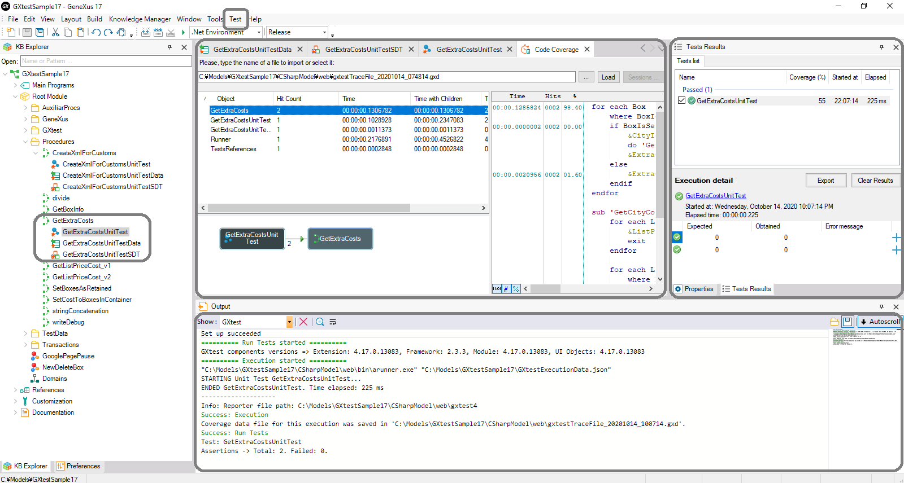

GXtest v4 allows you to implement test automation solutions for GeneXus-based applications. This article shows its main features and, last but not least, it provides links to all the details that have been improved. Main FeaturesWith GXtest it is possible to create unit, service, and user interface tests. GXtest has added features to take more advantage of these tests. The most important features added are as follows: Combination of test data for unit testingYou can configure data generated for unit tests, by selecting the algorithm to combine data and the data itself. More information at Unit Test Data Generation. Database mocking for unit testingThis feature is a technique that allows you to set the desired database state (for different tables) in your unit tests to let specific data-sets ready for future test execution. More information at Database Mocking. Test coverageNow you can run unit tests with the available test coverage property. This feature is useful to measure the coverage of a test regarding its called objects in a particular test execution.  More information at Test Coverage. Reference commands by control nameNow it is possible to execute actions on web applications through UI tests referencing the controls by their names. More information at Commands by Control Name. User interface tests for Native Mobile appsUI testing for Smart Devices Applications is available using native GeneXus programming for Android and iOS, through a specific object in the GeneXus IDE. More information at UI Test of Native Mobile Apps. More DetailsSee Also
|
| Backlinks | |
| Expanded DevOps with GeneXus 17 | Toc:GeneXus 17 |